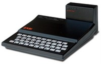
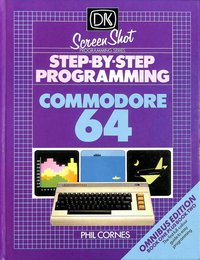

Interest in IT |
| What is your interest in IT? |
Picture 1: The IT Guy |
| I have always been interested in technology; curious about finding how things work and being exposed to technology from a very young age has kept my passion for tech alive. |
| When did your interest in IT start? |

Picture 2: ZX-81 |
| I consider myself blessed to have grown up in the era of the Microcomputer; I was lucky enough to be one of those who had a personal computer for a present when I was young (7 years old) just as it was beginning. It was a Sinclair ZX-81 (with 16K RAM pack) and from the minute I unboxed it and switched it on I was hooked. |
| Was there a particular event or person that sparked your interest? |

Picture 3: C64 Programming |
| I had grown up around the first 'consumer' (personal) computers; starting with a ZX-81 but quickly moving onto a Commodore 64 within 2 years and learning to program in the BASIC and assembler languages. If I had to pinpoint a single trigger it would have to be watching "The Computer Programme"; a series screened in the UK focussing on the introduction of computers within the home and the more I watched it the more I could see potential and what else could be done with these amazing machines. |
| Outline your IT experience (if any) |
| As you can tell, I'm not a young fella(!) - I consider myself fortunate enough to take my passion and turn it into a profession; I've been working in IT for over 20 years now. Originally starting out as a desktop support engineer, I've moved into Infrastructure roles primarily in the Wintel Server space, then moved up into the team lead and IT Management roles. |
| Why did you choose to come to RMIT? |
| I wanted to complete my tertiary education in IT to round off the practical knowledge I had. I migrated to Australia in 2003 and wanted to find a University and a degree program that aligned with my values and my interest in furthering my knowledge. The Bachelors of IT with a Minor of Management appealed to me in that it deals a lot with a lot of facets of IT; Security, Development and leadership. |
| What do you expect to learn during your studies? |
| Considering I am now in the final stages of my studies I'd like to think that I've learnt most of what I need to cement my learning in this area. I've completed around 20 units of this degree; I'm hoping to take my learnings from my studies and apply them further in the real world. |